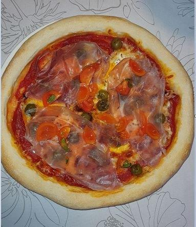

My First Blog Post: Beginner recipes: The classic Italian dish pasta with asparagus and prosciutto and pizza with prosciutto.
August 20, 2023
Here's a simple recipe for pasta with prosciutto and asparagus:
Ingredients:
Instructions:
- In a large pot, boil the water and add the salt. Cook the pasta according to the instructions on the package until al dente.
- While the pasta is cooking, prepare the asparagus. Remove the tough lower parts of the asparagus and cut them into pieces about 5 cm long.
- Heat the olive oil in a frying pan over a medium heat. Add the chopped garlic and fry for 1-2 minutes until it starts to release its aroma.
- Add the sliced asparagus to the pan and fry for 5-7 minutes until soft but still crisp. Stir them occasionally.
- While the asparagus is roasting, slice the ham into strips or cut into smaller pieces.
- When the asparagus is ready, add the sliced prosciutto to the pan and fry for another 2-3 minutes until the prosciutto is lightly browned.
- Drain the cooked pasta and add it to the asparagus and ham in the pan. Stir well to mix the ingredients evenly.
- Season with salt if necessary and freshly ground black pepper to taste.
- Serve the pasta hot with the addition of freshly grated Parmesan cheese.
This recipe will allow you to enjoy the flavour of the ham and fresh asparagus, which combine beautifully with the aromatic garlic and pasta. Enjoy!
Here's a recipe for prosciutto pizza:
Ingredients:
Freshly ground black pepper
Instructions:
- First, prepare the pizza dough. If you are using ready-made pizza dough, follow the instructions on the package. If you want to make homemade dough, use the recipe of your choice.
- Preheat the oven to the highest possible temperature (usually around 230 °C) and prepare a baking tray that you have lightly greased.
- On a floured surface, roll out the pizza dough into the desired shape (round, rectangular, etc.). Place it on the prepared baking tray.
- Spread the tomato sauce or pelata evenly over the dough, leaving a border.
- Sprinkle the grated cheese over the sauce.
- Place the slices of prosciutto over the cheese.
- Season with salt and pepper to taste.
- Bake the pizza in the preheated oven for 10-15 minutes, or until the dough is crisp and the cheese is melted and golden brown.
- While the pizza is baking, wash and dry the rocket.
- When the pizza is cooked, remove it from the oven and leave it to cool slightly.
- Arrange the fresh rocket on top of the pizza.
- Drizzle with about 1 tablespoon of olive oil.
- Add freshly ground black pepper, if desired.
- Slice the pizza and serve immediately.
This recipe will allow you to enjoy the taste of salty prosciutto, soft cheese and fresh rocket on crispy pizza dough. Enjoy your homemade ham pizza!